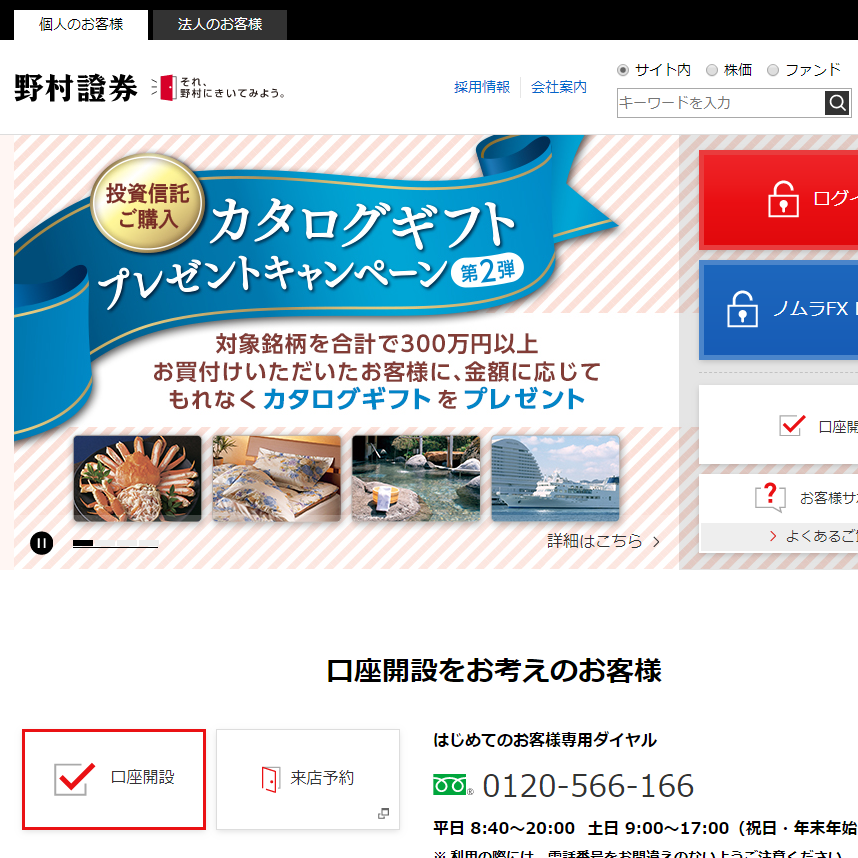
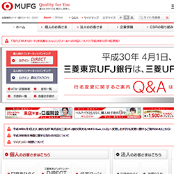
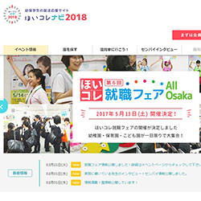
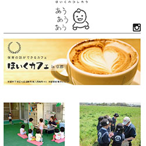
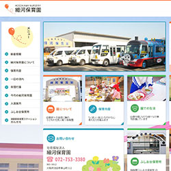
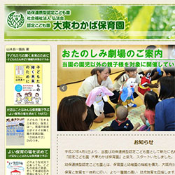
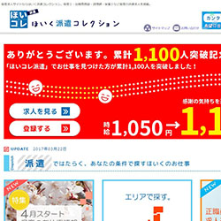

制作物一覧WORK LIST
今まで制作に携わったWEBサイト一覧です。

大手証券会社
- 開発規模
- ディレクター：1名、デザイナー：1名、コーダー(本人担当箇所)：2名
- 担当箇所
- コーディング(HTML/CSS)
- 使用ツール
- Atom / HTML / CSS / Git(バージョン管理) / SourceTree(GUIツール) / WinMerge
大手証券会社の口座開設者向けの新規コンテンツやキャンペーン・コラムページの追加。
主にコーディング(HTML/CSS)を担当していました。コーダーが複数人おり、GITを使ったソースコードの管理をしていました。
URL：http://www.nomura.co.jp/

大手銀行サイト
- 開発規模
- ディレクター：2名、コーダー(本人担当箇所)：3名
- 担当箇所
- コーディング(HTML/CSS)
- 使用ツール
- Atom / HTML / CSS / SVN(バージョン管理) / WinMerge
大手銀行サイトのコンテンツページの追加や既存ページの修正を担当しました。 主にコーディング(HTML/CSS)を担当していました。コーダーが複数人おり、SVNを使ったソースコードの管理をしていました。
URL：http://www.bk.mufg.jp/

保育系新卒求人サイト
- 開発規模
- ディレクター兼プログラマー：1名、デザイナー：1名、コーダー兼プログラマー(本人担当箇所)：1名、SE外注
- 担当箇所
- コーディング(HTML/CSS/JS)、プログラミング(PHP/MySQL)
- 使用ツール
- DreamweaverCS6/HTML5/CSS3/Javascript(jQuery)/PHP/MySQL
保育士・幼稚園教諭などを目指す学生をターゲットにした新卒求人サイトです。
全ページ(PC/SP含む)のコーディング(HTML/CSS)とJavascript/jQueryを使った
アニメーション・エフェクトなどの設置を担当しました。
また一部、検索機能ページ(エリア・路線検索など)のプログラミング(PHP/MySQL)を担当しました。
URL：https://hoikucollection.jp/navi/2018/
保育系キュレーションサイト
- 開発規模
- ディレクター：1名、デザイナー：1名、コーダー(本人担当箇所)：1名
- 担当箇所
- コーディング(HTML/CSS/JS)、CMS(WordPress)の設置・カスタマイズ
- 使用ツール
- DreamweaverCS6/XHTML/CSS/Javascript(jQuery)/CMS(WordPress)
保育士・幼稚園教諭などを目指す学生をターゲットにしたキュレーションサイトです。
全ページ(PC/SP含む)のコーディング(HTML/CSS/JS)とCMS(WordPress)の構築・カスタマイズを行い
WordPress内の記事投稿ページから、ライターの方が記事を投稿できるようにしました。
URL：https://hoikucollection.jp/infomation/

キュレーション型求人サイト
- 開発規模
- ディレクター：1名、デザイナー：1名、コーダー(本人担当箇所)：1名
- 担当箇所
- コーディング(HTML/CSS/JS)、CMS(WordPress)、プログラミング(PHP)
- 使用ツール
- DreamweaverCS6/HTML5/CSS3/Javascript(jQuery)/CMS(WordPress)
保育園で実際に働いている方にインタビューを取り、それを記事にしたキュレーション型求人サイトです。
全ページ(PC/SP含む)のコーディング(HTML/CSS/JS)とCMS(WordPress)の構築・カスタマイズを行いました。
URL：http://hoikucollection.jp/korekara/

保育園の新規ホームページ制作
- 開発規模
- ディレクター：1名、デザイナー：1名、コーダー(本人担当箇所)：1名
- 担当箇所
- コーディング(HTML/CSS/JS)
- 使用ツール
- DreamweaverCS6/HTML5/CSS3/Javascript(jQuery)
保育園から依頼があった新規ホームページ制作の全ページのコーディング(PC/SP含む)を担当しました。
URL：http://hosokawa-hoikuen.jp/

保育園のホームページ制作(リニューアル)
- 開発規模
- ディレクター：1名、デザイナー：1名、コーダー(本人担当箇所)：1名
- 担当箇所
- コーディング(HTML/CSS/JS)
- 使用ツール
- DreamweaverCS6/HTML5/CSS3/Javascript(jQuery)
保育園から依頼があった既存ホームページのリニューアルを行いました。
URL：http://www.eonet.ne.jp/~wakaba-hoikuen/index.html

保育系派遣求人サイト
- 開発規模
- ディレクター兼プログラマー：1名、デザイナー：1名、コーダー兼プログラマー(本人担当箇所)：1名
- 担当箇所
- コーディング(HTML/CSS)、プログラミング(PHP)
- 使用ツール
- DreamweaverCS6/XHTML/CSS/Javascript(jQuery)/PHP/MySQL
保育士・幼稚園教諭などの派遣求人サイトです。
主に追加コンテンツのコーディングや検索機能追加のプログラミング(PHP/MySQL)、ページの修正等を行いました。
URL：http://hoikucollection.jp/navi/2017/event/hokusetsu_fair.php